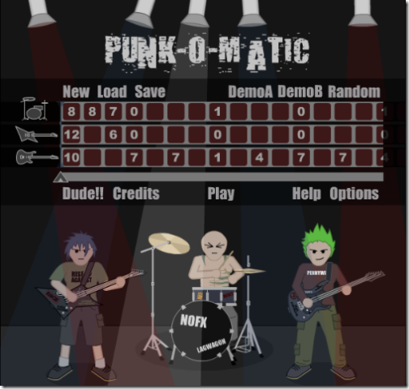

25 octobre 2006
C'est les vacances !
Pour commencer les vacances voici quelques trucs en vrac :

Punk-O-Matic vous permet de composer rapidement de la musique punk via un éditeur relativement simple. Quelques démos sont proposées. Après ça une citation trouvée sur BashFR.org : "<crampman> Un vrai geek, c'est un mec qui croit que dans 1 km, il y a 1024 mètres." Hum sinon en ce moment j'écoute l'album "Capture/Release" du groupe "The Rakes" C'est tout ! Antoine.
Commentaires 0
Aucun commentaire.